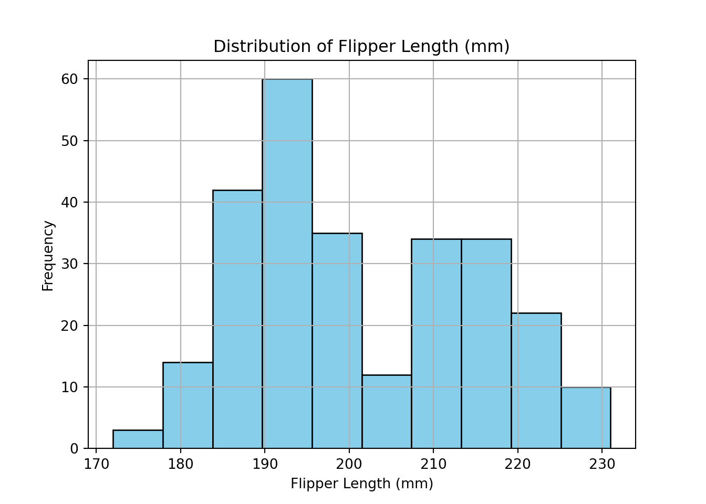
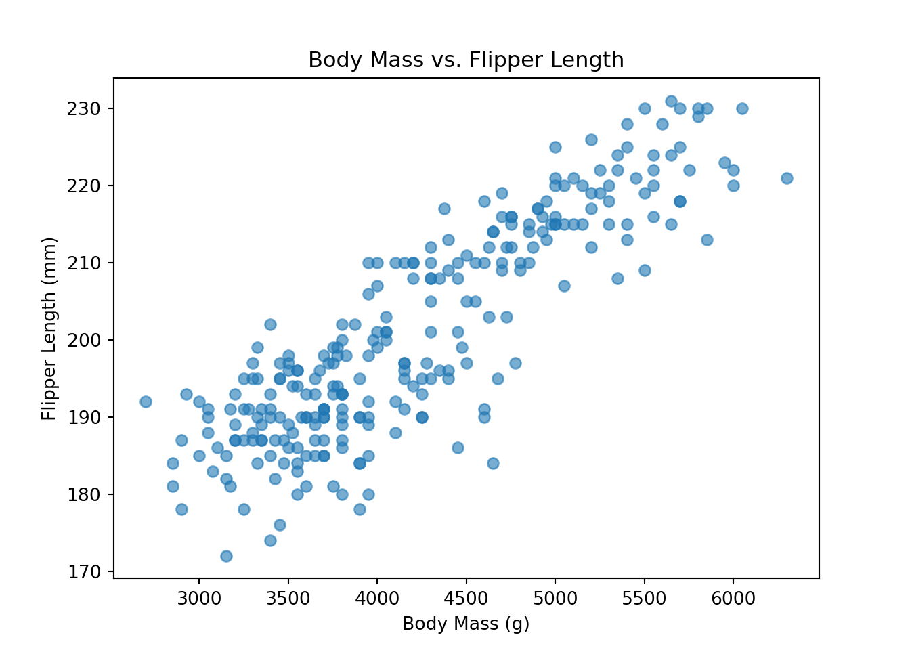
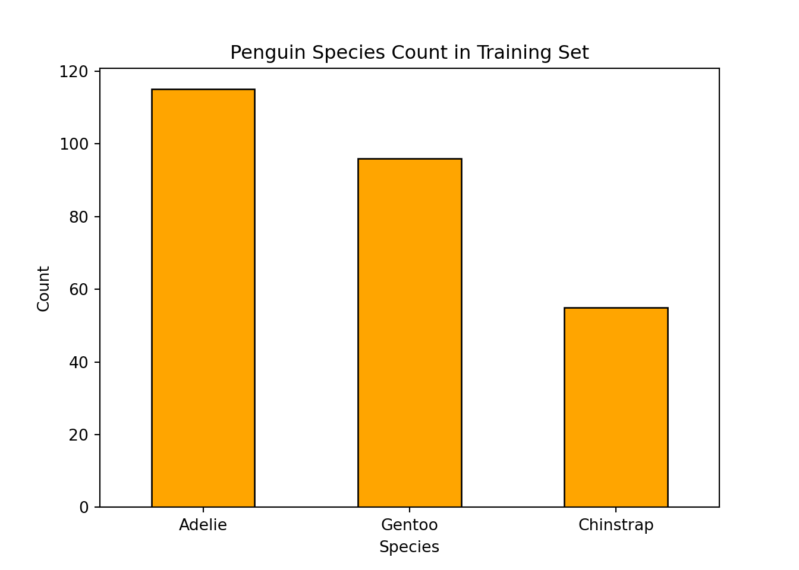

mindmap
root((Frequentist
Hypothesis
Testings
))
Simulation Based<br/>Tests
Classical<br/>Tests
(Chapter 1: <br/>Tests for One<br/>Continuous<br/>Population Mean)
{{Unbounded<br/>Response}}
Known<br/>Population<br/>Variance
)One sample<br/>t test(
Unknown<br/>Population<br/>Variance
)One sample<br/>z test(
{{Proportion between<br/>0 and 1<br/>obtained from a <br/>Binary Response}}
)One sample<br/>z test(
(Chapter 2: <br/>Tests for Two<br/>Continuous<br/>Population Means)
(Chapter 3: <br/>ANOVA-related <br/>Tests for<br/>k Continuous<br/>Population Means)
2 Tests for One Continuous Population Mean
This chapter introduces statistical tests designed to analyze a single sample, which is a fundamental task in data analysis across many disciplines. Whether you’re evaluating whether the average recovery time from a treatment differs from a known standard, assessing whether student test scores exceed a benchmark, or testing if the proportion of success in a group differs from an expected rate, these methods help determine whether the observed values are statistically significant or simply due to chance.
There are several statistical tests used to evaluate hypotheses about a single sample. The appropriate test depends on the type of variable (mean or proportion), sample size, and whether population parameters like variance are known.
We test whether a population mean equals a specific value. The right test depends on:
- Type of response
- Whether the population variance is known
- Sample size
In this chapter, we focus on statistical tests used to evaluate hypotheses about a single population mean or proportion, based on sample data. These tests help determine whether a sample provides sufficient evidence to conclude that the population mean (or proportion) differs from a specified value.
We cover two cases for the mean — depending on whether the population variance is known or unknown — and one test for binary outcomes where we’re testing a population proportion.
Key tests include:
2.1 One-sample t-test for the mean
2.1.1 Review
Use this test when: - The population variance is unknown, and - The sample is either normally distributed or large enough to rely on the central limit theorem.
Imagine you want to assess whether a new method of teaching introductory physics improves student performance compared to the traditional method previously used. To explore this, you test the new method at the University of British Columbia (UBC) and compare the results to historical data from students who were taught using the traditional approach. This historical data serves as your reference value.
Suppose the population has an unknown average physics score, denoted as:
\[ \mu \quad \text{(mean physics score at UBC)} \]
Since we do not have access to the grades of all students, we take a random sample from the population. Let this sample consist of \(n\) students, with observed scores:
\[ X_1, X_2, \dots, X_n \]
The central question becomes:
Is the mean physics score in our sample statistically different from a given reference value?
If, for example, the historical average physics score is known to be 75, then our question becomes more specific:
Is the mean physics score in the sample statistically different from 75?
2.1.2 Study Design
In this example we use the Palmer Station Penguins dataset collected by the LTER in Antarctica (2007 – 2009).
The dataset spans three penguin species and includes continuous variables such as flipper length, bill size, and body mass.
Research question:
Is the average flipper length of penguins significantly different from 200 mm?
2.1.3 Data Collection & Wrangling
We obtain the dataset Palmer Station Penguins dataset collected by the ‘LTER’
Attaching package: 'palmerpenguins'The following objects are masked from 'package:datasets':
penguins, penguins_raw
Attaching package: 'dplyr'The following objects are masked from 'package:stats':
filter, lagThe following objects are masked from 'package:base':
intersect, setdiff, setequal, union── Attaching core tidyverse packages ──────────────────────── tidyverse 2.0.0 ──
✔ forcats 1.0.1 ✔ readr 2.1.5
✔ ggplot2 4.0.0 ✔ stringr 1.5.2
✔ lubridate 1.9.4 ✔ tibble 3.3.0
✔ purrr 1.1.0 ✔ tidyr 1.3.1── Conflicts ────────────────────────────────────────── tidyverse_conflicts() ──
✖ dplyr::filter() masks stats::filter()
✖ dplyr::lag() masks stats::lag()
ℹ Use the conflicted package (<http://conflicted.r-lib.org/>) to force all conflicts to become errorsimport seaborn as sns
import pandas as pd
from sklearn.model_selection import train_test_split
# Load dataset
penguins = sns.load_dataset("penguins")
# Drop rows with missing values
penguins_clean = penguins.dropna()
# 80/20 train–test split
train_set, test_set = train_test_split(
penguins_clean, test_size=0.2, random_state=42
)2.1.4 Exploratory Data Analysis (EDA)
Before conducting the statistical test, we begin with an exploratory analysis to understand the distribution and characteristics of the flipper_length_mm variable.
First, we examine summary statistics such as the mean, standard deviation, and quartiles. This helps us get a sense of the central tendency and spread of the data:
summary(train_set$flipper_length_mm) Min. 1st Qu. Median Mean 3rd Qu. Max.
172.0 190.0 198.0 201.5 214.0 231.0 print(train_set["flipper_length_mm"].describe())count 266.00000
mean 201.00000
std 13.91592
min 172.00000
25% 190.00000
50% 197.00000
75% 213.00000
max 231.00000
Name: flipper_length_mm, dtype: float64Next, we visualize the distribution of flipper lengths using a histogram. This allows us to assess whether the data are approximately symmetric and whether any outliers are present:
import matplotlib.pyplot as plt
train_set["flipper_length_mm"].hist(edgecolor="black", color="skyblue")
plt.title("Distribution of Flipper Length (mm)")
plt.xlabel("Flipper Length (mm)")
plt.ylabel("Frequency")
plt.show()
To explore the relationship between flipper length and another continuous variable, we create a scatter plot of flipper length versus body mass. This helps us visually assess whether larger penguins tend to have longer flippers, and whether this relationship is linear or varies across ranges:
plt.scatter(
train_set["body_mass_g"],
train_set["flipper_length_mm"],
alpha=0.6
)
plt.title("Body Mass vs. Flipper Length")
plt.xlabel("Body Mass (g)")
plt.ylabel("Flipper Length (mm)")
plt.show()
Now, we can perform one‑Sample t-Test
t_test <- t.test(train_set$flipper_length_mm, mu = 200)
t_test
One Sample t-test
data: train_set$flipper_length_mm
t = 1.7746, df = 265, p-value = 0.0771
alternative hypothesis: true mean is not equal to 200
95 percent confidence interval:
199.8316 203.2435
sample estimates:
mean of x
201.5376 import scipy.stats as stats
t_stat, p_value = stats.ttest_1samp(
train_set["flipper_length_mm"], popmean=200
)
print(f"t = {t_stat:.3f}, p = {p_value:.4f}")t = 1.172, p = 0.24222.1.5 Hypotheses
We can formally express this with the following hypotheses:
- Null hypothesis \(H_0\): \(\mu = 75\)
- Alternative hypothesis \(H_1\): \(\mu \ne 75\)
Under the null hypothesis, we assume that the average score under the new method is equal to the historical average of 75. If the null is rejected, we conclude that there is a statistically significant difference, suggesting that the new method may lead to either higher or lower average performance.
2.1.6 Test Flavour and Components
The test statistic is:
\[t = \frac{\bar{x} - \mu_0}{s / \sqrt{n}}\]
Where: - ( s ) is the sample standard deviation (used instead of ( \(\sigma\) ))
This statistic follows a t-distribution with ( n - 1 ) degrees of freedom.
2.1.7 Inferential Conclusions
A one-sample t-test was conducted to determine whether the average flipper length of penguins is significantly different from 200 mm. Based on a training sample, the test produced a t-statistic of t and a p-value of p.
Given a significance level of 0.05, if the p-value is less than 0.05, we reject the null hypothesis and conclude that the average flipper length is significantly different from 200 mm. If not, we do not have sufficient evidence to say it differs.
2.1.8 How to run the test in R and Python?
The following lines of code in tabset show you how to run the test in R or Python.
t_test <- t.test(train_set$flipper_length_mm, mu = 200)
t_test
One Sample t-test
data: train_set$flipper_length_mm
t = 1.7746, df = 265, p-value = 0.0771
alternative hypothesis: true mean is not equal to 200
95 percent confidence interval:
199.8316 203.2435
sample estimates:
mean of x
201.5376 import scipy.stats as stats
t_stat, p_value = stats.ttest_1samp(
train_set["flipper_length_mm"], popmean=200
)
print(f"t = {t_stat:.3f}, p = {p_value:.4f}")t = 1.172, p = 0.24222.1.9 Storytelling
Given a significance level of 0.05, if the p-value is less than 0.05, we reject the null hypothesis and conclude that the average flipper length is significantly different from 200 mm. If not, we do not have sufficient evidence to say it differs.
2.2 One-sample z-test for the mean
2.2.1 Review
We use this test when: - The population variance σ² is known, and - The sample comes from a normally distributed population, or the sample size is large (typically ( n )).
The test statistic is:
\[ z = \frac{\bar{x} - \mu_0}{\sigma / \sqrt{n}} \]
Where: - ( \(\bar{x}\) ) is the sample mean
- ( \(\mu_0\) ) is the hypothesized population mean
- ( \(\sigma\) ) is the known population standard deviation
- ( n ) is the sample size
We compare the calculated ( z )-value to a standard normal distribution to compute a p-value or make a decision based on a critical value.
Let’s revisit the earlier scenario: you want to assess whether a new method of teaching introductory physics at the University of British Columbia (UBC) improves student performance compared to historical results. This time, assume that the population standard deviation is known from previous years of large-scale data collection. This allows us to use a z-test. Suppose the average physics score in the population is: $$
μ(mean physics score at UBC)
$$
\[ \mu \quad \text{(mean physics score at UBC)} \] And we collect a random sample of \(n\) students, recording their scores:
\[ X1,X2,…,XnX_1, X_2, \dots, X_n \]
The Key question becomes:
Is the sample mean statistically different from a known reference value?
If, for example, the historical average physics score is known to be 75, then our question becomes more specific:
Is the mean physics score in the sample statistically different from 75?
2.2.2 Study Design
We again use the Palmer Station Penguins dataset collected by the LTER in Antarctica (2007 – 2009).
It includes measurements such as flipper length, bill size, and body mass across three penguin species.
Research question:
Is the average flipper length of penguins significantly different from 200 mm, assuming a known population standard deviation?
2.2.3 Data Collection & Wrangling
import seaborn as sns
import pandas as pd
from sklearn.model_selection import train_test_split
# Load dataset
penguins = sns.load_dataset("penguins")
penguins_clean = penguins.dropna()
train_set, test_set = train_test_split(
penguins_clean, test_size=0.2, random_state=42
)2.2.4 Exploratory Data Analysis (EDA)
summary(train_set$flipper_length_mm) Min. 1st Qu. Median Mean 3rd Qu. Max.
172.0 190.0 198.0 201.5 214.0 231.0 print(train_set["flipper_length_mm"].describe())count 266.00000
mean 201.00000
std 13.91592
min 172.00000
25% 190.00000
50% 197.00000
75% 213.00000
max 231.00000
Name: flipper_length_mm, dtype: float64import matplotlib.pyplot as plt
train_set["flipper_length_mm"].hist(edgecolor="black", color="skyblue")
plt.title("Distribution of Flipper Length (mm)")
plt.xlabel("Flipper Length (mm)")
plt.ylabel("Frequency")
plt.show()plt.scatter(
train_set["body_mass_g"],
train_set["flipper_length_mm"],
alpha=0.6
)
plt.title("Body Mass vs. Flipper Length")
plt.xlabel("Body Mass (g)")
plt.ylabel("Flipper Length (mm)")
plt.show()2.2.5 Testing Settings
We use a significant level of to run the test.
2.2.6 Hypotheses
We can formally express this with the following hypotheses:
- Null hypothesis \(H_0\): \(\mu = 75\)
- Alternative hypothesis \(H_1\): \(\mu \ne 75\)
Under the null hypothesis, we assume that the new teaching method does not significantly change the average score. If the null is rejected, we infer that the method may lead to higher or lower performance.
2.2.7 Test Flavour and Components
The test statistic is:
\[z=xˉ−μ0σ/nz = \frac{\bar{x} - \mu_0}{\sigma / \sqrt{n}}\]
Where: • \(\bar{x}\) is the sample mean
• \(\mu_0\) is the reference value (e.g., 75)
• \(\sigma\) is the known population standard deviation • \(n\) is the sample size
This statistic follows a standard normal distribution (\(\mathcal{N}(0, 1)\))..
2.2.8 Inferential Conclusions
The z-test typically results in a slightly smaller p-value than the t-test because the z-distribution has “thinner tails” than the t-distribution.
2.2.9 How to run the test in R and Python?
2.2.10 Storytelling
Rejecting the null here provides high confidence that the population mean has shifted from 200 mm, assuming our historical \(\sigma\) is still accurate.
2.3 One-sample z-test for proportions
2.3.1 Review
Use this test when: - The variable is binary (success/failure, yes/no, etc.), and - You want to test a population proportion ( p ), using a large enough sample.
The test statistic is:
\[z = \frac{\hat{p} - p_0}{\sqrt{p_0(1 - p_0)/n}}\]
Where: - ( \(\hat{p}\) ) is the sample proportion
- ( \(p_0\) ) is the hypothesized population proportion
- ( \(n\) ) is the sample size
Just like the one-sample t-test is used to assess differences in means, the one-sample z-test is used when: • You are working with proportions (e.g., fraction of penguins with a specific characteristic), • The sample size is sufficiently large to justify using the normal approximation. This test is ideal for binary outcomes: for example, whether a penguin is of the Adelie species or not. Suppose you want to test whether the proportion of Adelie penguins in your sample differs from a historically established value. Let’s say historical records suggest that 45% of penguins in a certain region were Adelie. You want to know whether the proportion in your current sample is statistically different from 0.45.
The central question becomes: > ** Is the proportion of Adelie penguins in the sample different from 0.45?? We are again working with the Palmer Station Penguins** dataset.
2.3.2 Study Design
Once again, we turn to the Palmer Station Penguins dataset, which includes species information for each penguin observed.
Research question:
* Is the proportion of Adelie penguins in the training dataset significantly different from 45%?**
2.3.3 Data Collection & Wrangling
We continue with the same cleaned and split dataset from the earlier section.
train_set$is_adelie <- ifelse(train_set$species == "Adelie", 1, 0)
n <- nrow(train_set)
num_adelie <- sum(train_set$is_adelie)
p_hat <- num_adelie / n
cat("Sample size:", n, "\n")Sample size: 266 cat("Number of Adelie penguins:", num_adelie, "\n")Number of Adelie penguins: 113 Sample proportion: 0.425 # Add a binary column: 1 if Adelie, 0 otherwise
train_set["is_adelie"] = (train_set["species"] == "Adelie").astype(int)
# Total number of observations
n = train_set.shape[0]
# Number of Adelie penguins
num_adelie = train_set["is_adelie"].sum()
# Sample proportion
p_hat = num_adelie / n
print(f"Sample size: {n}")Sample size: 266print(f"Number of Adelie penguins: {num_adelie}")Number of Adelie penguins: 115print(f"Sample proportion: {p_hat:.3f}")Sample proportion: 0.4322.3.4 Exploratory Data Analysis (EDA)
Let’s visualize the distribution of penguin species in our training sample.

train_set["species"].value_counts().plot(
kind="bar", color="orange", edgecolor="black"
)
plt.title("Penguin Species Count in Training Set")
plt.ylabel("Count")
plt.xlabel("Species")
plt.xticks(rotation=0)(array([0, 1, 2]), [Text(0, 0, 'Adelie'), Text(1, 0, 'Gentoo'), Text(2, 0, 'Chinstrap')])plt.show()
2.3.5 Hypotheses
We can formally express this with the following hypotheses:
- Null hypothesis \(H_0\): \(p = 0.45\)
- Alternative hypothesis \(H_1\): \(p \ne 0.45\) Where: • \(p\) is the true proportion of Adelie penguins in the population. We will estimate \(p\) using \(\hat{p}\), the sample proportion of Adelie penguins. The test statistic is:
\[z = \frac{\hat{p} - p_0}{\sqrt{p_0(1 - p_0)/n}}\]
Where: - ( \(\hat{p}\) ) is the sample proportion
- ( \(p_0\) ) is the hypothesized population proportion
- ( \(n\) ) is the sample size
This follows a standard normal distribution (\(z\)-distribution) under the null hypothesis.
2.3.6 How to run the test in R and Python
Now we perform the z-test for one proportion. Assuming a historical reference proportion of 0.45 for Adelie penguins:
import numpy as np
import scipy.stats as stats
# Reference proportion
p0 = 0.45
# Sample proportion
p_hat = num_adelie / n
# Standard error under H0
se = np.sqrt(p0 * (1 - p0) / n)
# z-statistic
z_stat = (p_hat - p0) / se
# Two-tailed p-value
p_value = 2 * (1 - stats.norm.cdf(abs(z_stat)))
print(f"z = {z_stat:.3f}, p = {p_value:.4f}")z = -0.579, p = 0.56242.3.7 Inferential Conclusions
A one-sample z-test for proportions was conducted to determine whether the proportion of female penguins differs significantly from 0.45. Based on the sample data, the test produced a z-statistic of z and a p-value of p. If we reject the null, it indicates the species composition in this region has shifted from historical records.
2.3.8 Storytelling
Given a significance level of 0.05, if the p-value is less than 0.05, we reject the null hypothesis and conclude that the proportion of female penguins is significantly different from 0.45. Otherwise, we do not have sufficient evidence to say it differs.